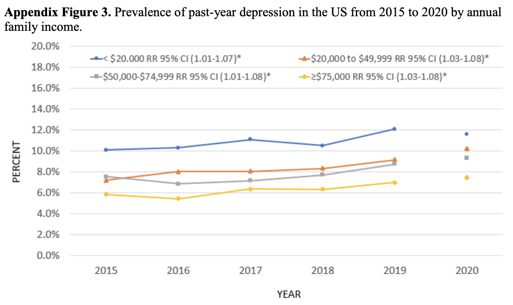
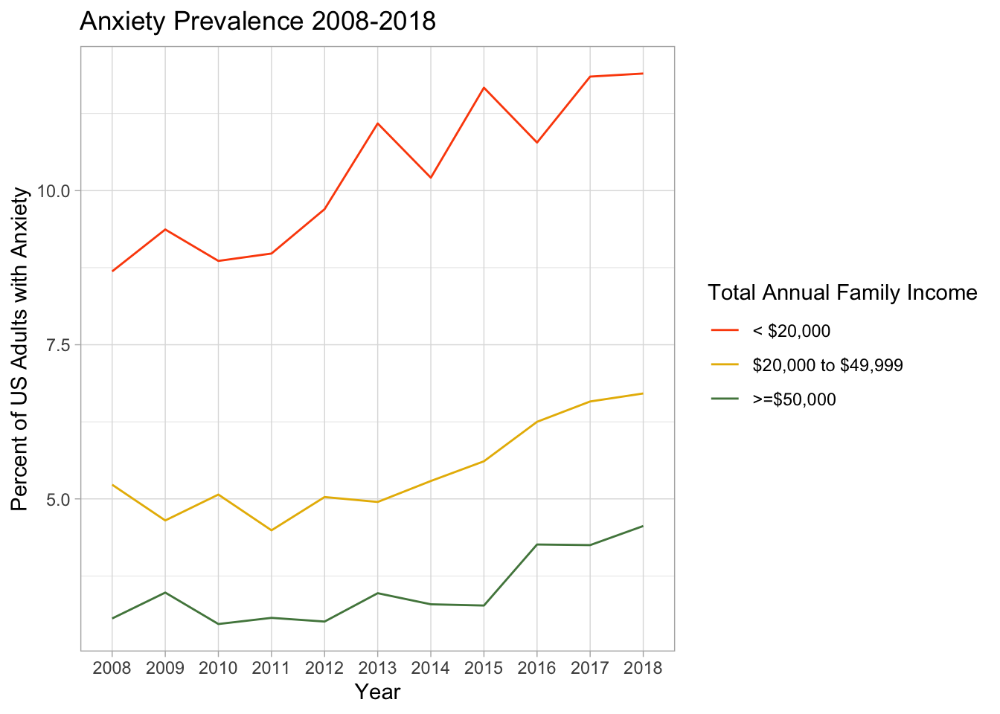
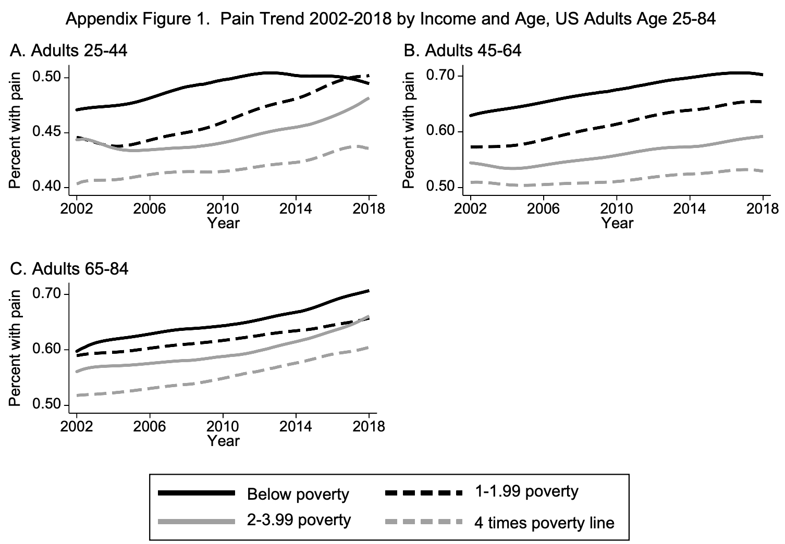

1 High Technology and the Chronic Pain Pandemic
A family of billionaires agreed to pay $6 billion in 2022 in response to thousands of lawsuits inculpating their company, Purdue Pharma, for its role in creating a nation-wide opioid crisis [1]. This money will do little to stem the current of these life-ruining prescriptions, while also failing to address the dilemma opioids were originally purported to solve: people across the globe are struggling with very real and persistent pain. In a world still ravaged by deadly parasites like malaria and noninfectious killers like cancer, pain may appear an unfortunate, though relatively inconsequential, externality of our economic system. But our pain ought to amount to something much greater than that. Chronic pain is uniquely poised to be a lodestar for public health efforts in this moment and a point of solidarity for the working class the world over.
Chronic pain today has three important features. First, it is ubiquitous [2]. Across the globe pain is the most common reason people seek medical care and its subtypes comprise three of the four leading causes of years lived with disability – a common measure of quality of life. Second, people’s pain is being endured in the context of the popular [3], ongoing [4] and catastrophic [5] failure of “high-tech” prescription opioids. This means that pain researchers today are at least considering alternatives to pill-popping, and workers are familiar with how devastating a purely biotechnological approach to health can be. Lastly, perhaps more than any other ailment, chronic pain can now be seen as a poignant reflection of the structure of capitalist society [See Chapter 2]. Unstable housing, long hours, poverty wages, food insecurity, and a general lack of social security coalesce in the human brain to produce much of the hurt we feel day-to-day.
Together, these three features can give new direction. Big Pharma’s and Big Medicine’s overtly technocratic attempt to address the pain pandemic trumpets a fresh reprise of a tale as old as time in public health. High-tech gadgets, without broad societal improvement, rarely create lasting positive change. In fact, they often have devastating consequences. And yet, funding for pain research is being pumped into brand new tech “solutions” while ignoring the dire need for social reorganization. The result has been a vast dearth of pain treatment options, sparsely littered with feeble non-pharmacological strategies. Costly MRI scans here, inaccessible therapy there, with mindfulness apps scattered throughout. But it is in this vacuum the working class has an opportunity to act on old wisdom: good health is won through class struggle, and disease prevention is best fortified with social reform.
1.1 Pain, Class, and a BioPsychoSocietal Model
Best estimates show the incidence of chronic pain in the US now surpasses that of diabetes, depression, and high blood pressure [6]. Globally, it is estimated that 3 in every 10 people are affected by chronic pain [2]. If you aren’t living with pain yourself, it is likely you’re interacting with someone who routinely suffers from pain. However, rates of chronic pain are not uniform throughout society. Persistent pain is more likely to be found in adults currently unemployed and adults living in poverty [7]. Workers living below the federal poverty level (FPL) are four times as likely to have high-impact chronic pain than those making at least 400% of the FPL. In other words, as with diseases like malaria and cancer, the most economically vulnerable members of society suffer the most [8].
This link between chronic pain and the social order has implications for how pain should be studied, treated, and prevented. Today’s psychologists and neuroscientists frequently argue the need for a “biopsychosocial” approach. Published in 1977, George Engel’s Biopsychosocial Model [9] of disease emphasizes that a strict biological approach “leaves no room within its framework for the social, psychological, and behavioral dimensions of illness.” However, while nominally embracing a biopsychosocial framework, today’s clinicians and researchers have adopted an incomplete interpretation of the word “social”. In modern pain studies, “social” implies various aspects of interpersonal, one-on-one social interactions such as handholding [10], clinician-patient relationships [11], and information based on others’ experiences [12]. While these things may play a small role in influencing a person’s pain, they fail to clarify the role of enormous pain-producing forces that come into view when “social” is interpreted as “societal”.
George Engel actually specified a more expansive meaning of “biopsychosocial” 46 years ago:
“This approach, by treating sets of related events collectively as systems manifesting functions and properties on the specific level of the whole, has made possible recognition of isomorphies across different levels of organization, as molecules, cells, organs, the organism, the person, the family, the society, or the biosphere.”
This interpretation of “biopsychosocial” as “biopsychosocietal” would subsume social policies and structures in its attempt to understand the origins of chronic pain pathology. So what is the impact on pain of a lack of social housing, basic nutrition and income, and medical insurance? What effect would wealth and land redistribution programs have on the huge prevalence of chronic pain around the world? Instead of focusing on these questions, pain researchers today pay lip service to George Engel while distracting themselves with increasingly complex technological answers to pain.
1.2 Policy Framing and Victim Blaming
Faced with over 260,000 deaths from prescription opioids [13] in the last 20 years, the US has spent a significant amount of money trying to better understand and treat pain. But research initiatives to find safe opioid replacements remain focused on the technocratic treatment of individuals while failing to embrace a population-focused biopsychosocietal perspective. The research agenda takes our current form of uncaring capitalism as an immutable starting point and tries to invent its way to a better place. Without so much as considering possible societal origins of pain, the US continues to prioritize the discovery of complex biotech solutions to treat pain after it arises, one person at a time.
Amid a record-setting incidence of prescription opioid deaths in 2010, the Affordable Care Act (ACA) provisioned the creation of a new committee [14] to harmonize pain research efforts across federal agencies. To this end, the committee published an analysis [15] detailing a $430,000,000 annual budget for pain research. This money was distributed to over 1,200 research projects. Investigations of “neurobiological/glial mechanisms” and pain treatment received the lion’s share with 35% of the budget. In comparison, pain prevention received a pitiful 1.4%.
| Allocation of Pain Research Money | |
| Grouped by 29 IPRCC Pain Research Categories1 | |
| Research Category | Percent of Budget |
|---|---|
| Neurobiological/Glial Mechanisms | 20.4 |
| Pharm Mechanisms & Treatment | 8.3 |
| Non-Pharm Mechanisms & Treatment | 7.3 |
| Training in Pain Research | 6.9 |
| Biobehavioral & Psychosocial Mechanisms | 5.9 |
| Development of Animal and Human Pain Models | 5.2 |
| Outcomes & Health IT for Decision-Making | 4.6 |
| Genetics and Genomics | 4.2 |
| Unique Populations | 4.2 |
| Mechanisms of Transition Phases | 4.1 |
| Pain & Non-Pain Comorbidities | 2.8 |
| Analgesic Development | 2.7 |
| Device & Therapy Delivery Systems Development | 2.3 |
| Comparative Effectiveness Research | 2.0 |
| Diagnosis & Case definitions | 1.9 |
| Epidemiology | 1.8 |
| Pain Education | 1.8 |
| Substance Use and Abuse/Addiction | 1.7 |
| Medical Management | 1.4 |
| Pain Prevention | 1.4 |
| Other "Omics" of Pain | 1.3 |
| Women's & Minority's Health Research | 1.3 |
| Informatics, Databases & IT Development | 1.2 |
| Chronic Overlapping Conditions | 1.2 |
| Sex & Gender Differences | 1.1 |
| Analgesic Drug Safety | 0.9 |
| Pain and Trauma | 0.9 |
| Health Disparities & Access to Care | 0.9 |
| Health Care Utilization | 0.3 |
| Source: IPRCC Federal Pain Research Portfolio Analysis Report | |
| 1 Interagency Pain Research Coordinating Committee | |
Percentage of the Pain Research Portfolio by Category
Even more tragic, the focal point of the nominally preventive research was “pain prevention through various approaches including self-directed activity, diet, life style programs and education campaigns for many disorders.” This up-by-your-bootstraps conceptualization of prevention despicably foists the burden on people who are relegated to the most pain-inducing environments. Those driving for Uber all morning and bussing tables all evening for low wages and no medical insurance are also expected to find time to meditate and meal prep in order to relieve their chronic low back pain. A truly preventive approach would focus on creating analgesic societies for the working class to inhabit. And while we can’t expect too much from “prevention’s” 1.4% of the pain budget, we could at least hope that significant strides have been made in translating our well-funded understanding of the neurobiological and glial underpinnings of pain into successful treatment strategies.
| Pain Mechanisms and Treatment vs. Prevention | |
| Funding Comparison | |
| Percent of Budget | |
|---|---|
| Neurobiological Mechanisms and Treatment | |
| Neurobiological/Glial Mechanisms | 20.4 |
| Pharm Mechanisms & Treatment | 8.3 |
| Non-Pharm Mechanisms & Treatment | 7.3 |
| Group Total | 36.0 |
| Prevention | |
| Pain Prevention | 1.4 |
| Group Total | 1.4 |
Funding of technologically-driven research to the neglect of prevention
No such luck. Most pain neuroscience involving human participants uses functional magnetic resonance imaging (fMRI) to measure activity in the brain while study participants lie in a small magnetic tube and perform simple tasks. This type of research is still barely able to identify when a person is currently experiencing chronic pain [16], let alone reduce their pain in a meaningful way. It also primarily recruits young healthy college students and fails to include participants from diverse income levels [17], all but ensuring study findings will not generalize to black and brown workers or poor white workers. As far as treatment goes, some clinical guidelines [18] now recommend against using certain types of imaging in the treatment of patients with chronic pain. The last 14 years of ACA-funded pain research have produced a lot of neat and high-tech studies but taught us very little about how to prevent or treat pain in the global proletariat. Unfortunately, this sort of fetishization of high technology is not new in the world of public health.
1.3 Technology on the Horizon
Public health practitioners in the first half of the nineteenth century weaponized broad social reform strategies to combat disease and promote health. Such work aimed to clean the environment, improve housing and working conditions, and provide water and sewage systems throughout society. But in the latter half of the 1800s, public health shifted its gaze with the advent of bacteriological research methods. The late doyenne of public health history and health leftism, Elizabeth Fee [19], wrote that
“Public health practice required a diverse set of disciplines and skills: economics, sociology, psychology, politics, law, statistics and engineering, as well as the biological and clinical sciences. In the period immediately following the brilliant experimental work of Pasteur, Koch, and the German bacteriologists, however, the bacteriological laboratory became the primary symbol of a new, scientific public health.” [20]
Reverberations of this new technologic symbolism, and its promise of a “scientific public health”, shaped approaches to treating and preventing acute and then chronic conditions for the next century and a half. During that time, the tools and technologies buttressing the promise of scientific, or technologic, public health have been embroiled in the product life-cycle of racial capitalism. In this cycle, health concerns are deracinated, cleansed of all sociopolitical context, and placed neatly in a biomedical framework where they are to be shot dead with expensive magic bullets. Given its roots in racial capitalism, we cannot expect technologic public health to be able to capital “S” Solve societal health issues caused by racial capitalism. Time and again is has failed to do so without
Today, with rise of Big Tech and silicon valley, the promise of technology often takes the form of a vague magic bullet to sell investors. Technobabble like “precision medicine”, “biofeedback”, “multi-modal real world data”, and “AI enriched health models” fills board rooms across the country as slavering CEOs vie for angel funding. What’s common to these promises is the hyperpersonalization of the products health tech wants to sell. https://www.cigionline.org/articles/technology-theatre/ https://jacobin.com/2022/03/high-tech-pandemic-solutions-tracing-apps-profits https://jacobin.com/2023/12/big-tech-mental-health-data-collection-colonization
Broken high tech health promises have been seen around the world addressing acute diseases like malaria, chronic diseases like cancer, and diseases like chronic pain that are somewhere in between.
It’s worth noting that “scientific public health” gets its name from the perception of its rigorous use of the scientific methods and the use of extremely precise technology. But the accuracy of neuroscience, especially with fMRI is dubious (rotem paper) and the meta science in other fields shows that they are not faring well either (nature paper) and here: https://ascopubs.org/doi/full/10.1200/JCO.23.02399?bid=345348313&md5=e29a45b06dc110ac02a3f981b483377b&cid=DM16315
1.3.1 Acute Malaria and Technology
Most people today understand Malaria to be an acute, infectious disease caused by mosquitoes. These mosquitoes, living near the equator and carrying one of the malaria parasites, bite and infect people. UNICEF reports that malaria infections kill a child under 5 years of age every minute. To save these kids and many adults, we need to directly kill either the mosquitoes or the parasites, right?
This is the logic that came to prevail around the turn of the twentieth century following the discovery of the malaria parasite. Malariologists began to describe the disease’s epidemiology in increasingly narrow biological terms because for the first time they could see with their own eyes the immediate cause of malaria in a person’s blood. New medical discoveries like these were made using the achromatic microscope, the latest and greatest microbiological technology of the time. These discoveries undoubtedly played important roles in curing patients and saving lives. But over time they served to close the aperture of the public health lens. What could not be seen under the new microscopes were the more proximal social structures (“the causes of the causes”) sustaining malaria transmission in the tropics.
Prior to the fanfare surrounding parasites and mosquitoes, a body of evidence had accumulated showing that malaria epidemiology is heavily influenced by agricultural practices. For example, a lack of decent housing often forces farm workers to sleep outside, exposing them to infected mosquito bites. Facing low wages, these same workers migrate elsewhere at the end of a harvest season in search of alternative income sources. When their new work lands them in an area with little or no malaria, a new epidemic can be triggered. Continuing to sleep in unprotected areas, workers are again bitten, this time by mosquitoes that are not yet infected with Malaria. The parasites in the workers’ blood can now complete their reproductive cycle in the mosquitoes and go on to infect other people. Such epidemics are not confined to tropical regions and have flared up in places as far north as [city] Russia, [city] Italy, and the Chicago river basin.
1.3.2 Chronic Cancer and Technology
1.3.3 But What About Vaccinations?
1.3.4 Pain and Technology
deracination of the brain and the whiteness of neuroscience, including MNI and ICBM space. Not only was the average brain implied to be white, but the brains that were used to create the template that almost all fMRI images are mapped to included 0 black brains. https://nist.mni.mcgill.ca/icbm-152lin/ “129 caucasion, 15 asian, 1 mixed decent [sic]” https://www.sciencedirect.com/science/article/pii/S0925492716301147 Population differences in brain morphology: Need for population specific brain template
The treatment of pain (and then treatment for the treatment of pain) has spawned its own technological mascots. At the turn of the 21st century, opioids and the brain scanner became the primary symbols of a new approach to pain management.
Congress resolved House Join Resolution 174 in 1989 declaring “That the decade beginning January 1, 1990, hereby is designated the ‘Decade of the Brain’.” The first recital of this resolution correctly identifies the broad need to address illnesses associated with the brain:
“Whereas it is estimated that fifty million Americans are affected each year by disorders and disabilities that involve the brain, including the major mental illnesses; inherited and degenerative diseases; stroke; epilepsy; addictive disorders; injury resulting from prenatal events, environmental neurotoxins and trauma; and speech, language, hearing and other cognitive disorders”
And then the fourth recital establishes a vague technocratic symbolism of brain science that will (hopefully) solve the above illnesses:
“Whereas a technological revolution occurring in the brain sciences, resulting in such procedures as positron emission tomography and magnetic resonance imaging, permits clinical researchers to observe the living brain noninvasively and in exquisite detail, to define brain systems that are implicated in specific disorders and disabilities, to study complex neuropeptides and behavior as well as to begin to learn about the complex structures underlying memory”
Two decades beyond The Decade of the Brain, and the technological revolution has not done much to move the needle on mental health. “Major mental illnesses” like anxiety and depression continue on an upward trajectory. This trend is not the same for all groups of people. Behold how consistently those groups with low incomes live with higher rates of these diseases.


Even with the additional hundreds of millions of dollars devoted to pain-specific neuroscience (see Section 1.2),the trend is the same with chronic pain. 
Note on how removing the brain from the patient from the society cannot account for this trend. In prevalences, don’t forget to include rate of untreated depression from that paper.
A truly revolutionary brain science would require explicit consideration of the racial capitalism in which our brains work, live, and suffer. And if its ends extend beyond the simple explanation of the origins of chronic pain, to prevention and treatment, it would also require the re-politicization of the brain and the pain patient. It would require a biopsychosocietal understanding and a politics that centers class conflict, led by those most at risk. It would provide effective means for the political mobilization of the working class.
The symbol of technology as a perpetually impending solution to disease is recapitulated in public health budgets throughout the world. The magic bullet seems always on tomorrow’s horizon while people suffer today. And as high tech pain science develops, similar to other health tech fields and “precision medicine” in particular, it exposes itself as a fraud. The last 3 decades of pain neuroscience provide state-of-the-art statistical models that ultimately depict biopsychosocietal origins of chronic pain. What we know about pain in the brain already supports broad societal improvement initiatives over additional technology [See Chapter 2].
At first blush, chronic pain might seem like an entirely new category of pathology. Scientists can’t point to something like a parasite or a tumor cell as its origin. Therefore one approach to managing pain is to spend exorbitant resources trying to pin down an objective measure, or “biomarker”, of its neurological provenance. Having dragged subjectivity into the objective realm, scientific public health could then deploy its usual methods. In this case that would include developing technology that specifically targets the pain biomarker and beating pain with experience. The only snag is that the history of public health demonstrates that addressing even more diseases solely through the development of high-technology rarely leads to lasting prevention or cure.